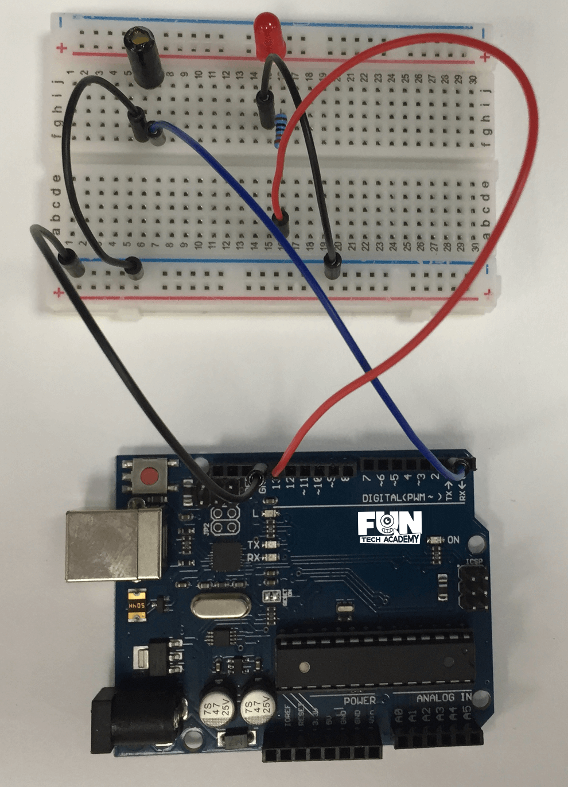

En este tema, aprenderemos a cómo utilizar un sensor de inclinación para detectar un ángulo.
(1) x Placa Arduino
(1) x Sensor de inclinación de bola
(1) x LED rojo de 5mm
(1) x Resistencia de 220 ohmios
(2) x F-M cables (cables de hembra a macho DuPont)
Los sensores de inclinación nos permiten detectar la orientación y/o inclinación en la que el componente se
encuentra. Son componentes pequeños, económicos, de bajo consumo y fáciles de usar.
Debido a su simplicidad, los hace adecuados para juguetes y otros aparatos electrónicos. A veces, se conocen
como "interruptores de mercurio", "interruptores de inclinación" o "sensores de bola rodante" por razones
obvias.
Se componen generalmente de una cavidad de una cierta clase (suelen ser cilíndricas) con una masa libre
conductora dentro, como una gota de mercurio o una bola rodante.
Un extremo de la cavidad tiene dos elementos conductores (polos), cuando el sensor está orientado hacia abajo,
la masa rueda sobre los polos y los cortocircuita, actuando como un interruptor de tiro.

Una vez efectuado todo el cableado, descargaremos el script del siguiente este link y lo cargaremos como hemos aprendido.
En este reto, haremos una alarma anti-remolque para las motos. Será muy sencillo y utilizaremos, además
del sensor de inclinación, un LED y un zumbador activo.
El reto consistirá en crear un sistema que al variar la inclinación del sensor, produzca una alarma
lumninosa y un zumbido.